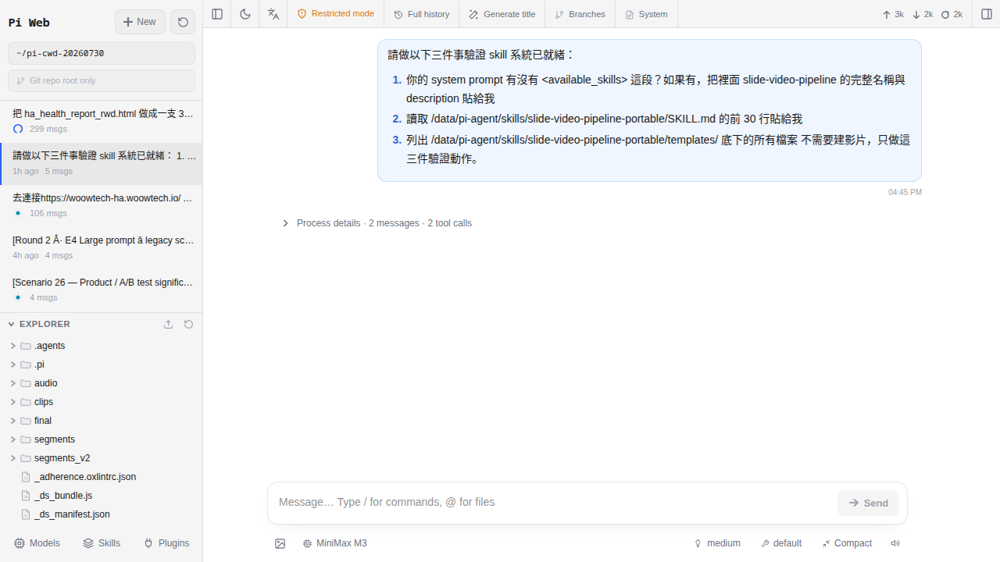

工作區長什麼樣
第一次從側邊欄點進 Pi Agent，會看到一片空空的畫面：左邊沒任何對話、中間打字區灰灰的、模型下拉還是「未設定」。這章就是帶你把每一塊認過一遍，之後任何一章講「打開 xxx 面板」你都找得到。
為什麼先把版面認完再動手
大部分人第一次打開 Pi Agent 都會愣三秒：畫面是英文的、打字區看起來能打字但按不下去、右上一排看不懂的圖示。這時候如果直接亂點，反而會被跳出來的表單問「baseUrl 是什麼」「thinkingFormat 選哪個」搞得更亂。
正確順序是這樣：先認版面（這章）→ 去申請一支 AI 金鑰（第 5 章）→ 把金鑰貼進來（第 6 章）→ 開第一次對話（第 7 章）。這章走完，你至少能指著任何一塊說出「這是幹嘛的」。
先搞懂：pi-web 是什麼
從 HA 側邊欄那顆「Pi Agent」按鈕點進去，看到的整個畫面，官方叫做 pi-web（就是 @agegr/pi-web 這個 npm 套件的執行結果）。它是一個「工作區（workspace）」，裡面裝了很多面板（panel），每個面板負責一件事。
pi-web 跟你熟悉的 HA 儀表板（Overview、Home Dashboard）是完全分開的兩個世界：
| 比項 | HA 儀表板 | pi-web 工作區 |
|---|---|---|
| 用來做什麼 | 看家裡設備狀態、按開關 | 跟 AI 對話、叫它做事 |
| 資料存哪 | /config/（HA 內部） | /data/pi-agent/（add-on 專屬） |
| 怎麼進 | 側邊欄「Overview」 | 側邊欄「Pi Agent」 |
| 設備控制 | 用滑鼠點卡片 | 用文字叫 AI 幫你點 |
| 介面語言 | 跟隨 HA 系統語言 | 英文為主，含簡中切換 |
主版面三大區塊速覽
Pi Agent 一打開，畫面會分成三大塊（電腦寬螢幕看得最清楚，手機會摺起來——見後面的 troubleshoot）。用下面這張表建立第一印象：
| 位置 | 裡面是什麼 | 什麼時候會用 |
|---|---|---|
| 左邊直欄 | Session 歷史（過去每一次對話） | 要接續之前聊到一半的話題 |
| 中間主區 | 對話串（上）＋ 打字區 composer（下） | 絕大部分時間都在這 |
| 右上工具列 | 面板切換（Models／Skills／Plugins／System 等；實際數量與外觀依 pi-web 版本而定） | 要換模型、裝技能、看目前 system prompt 時 |
右上還有一顆你的頭像／字母圖示——那是 HA 傳過來的登入身份（第 3 章有講）。看到你自己的字母，就代表 Ingress cookie 有跟上。

動手：把主要五個區塊逐一認識
照下面順序把游標移過去看一次，不用點也不用打字。目的就是「認位置」。
-
找左上角的 + New session 按鈕
它在左欄最上面，通常寫「新對話 / New session」加一個
+圖示。之後每次你想「跟 AI 從頭開始講一件事」，就按它。不要按——這章先認位置就好。 -
掃一遍左邊的 Session 列表
剛裝好的話這裡是空的（因為你還沒開過任何對話）。之後每開一次對話，就會多一列。每一列會顯示這次對話用的模型名稱、開始的日期時間、以及對話的第一句話當作標題。
-
看中間下方的打字區 composer
Composer 有三個東西：上方一個大文字框（打你要問的問題）、左下角一個模型下拉（Model dropdown，決定用哪家 AI）、右下角一顆送出按鈕（通常是一個紙飛機或
↑圖示）。現在打字框應該是灰的、送出按鈕按不下去——那是「沒設模型」的正常狀態。 -
看中間上方的對話串區
剛裝好一片空白。之後 AI 回應、思考塊、工具卡、diff（修改對照）通通會出現在這。頁面會自動往下滾，最新的訊息在最下面，最上面是這次對話的第一則。
-
把右上那排面板按鈕都認一遍（先別點）
常見的幾顆是：Models（模型與金鑰管理）、Skills（技能包管理）、Plugins（擴充外掛，日常不用碰）、System（唯讀，看目前這 session 的 system prompt 內容）。另外還有語言切換與 session 統計等小按鈕。實際數量、順序、圖示會隨 pi-web 版本改變，這裡不列固定圖示位置；滑鼠移上去多半會看到 aria-label 或提示字。
模型下拉（Model dropdown）細節
模型下拉是整個 Pi Agent 的靈魂，它決定你這一次講的話會送給哪家 AI 大腦處理。位置在 composer 打字框的左下角。
它會有三種狀態：
| 你看到什麼 | 代表什麼 | 下一步 |
|---|---|---|
| 「未設定 / No provider configured」或灰灰不能點 | 還沒加過任何 AI 金鑰 | 去 第 5 章 申請一支免費的 GLM |
顯示某個模型名（例如 glm-4.6） | 已經設好，之後送出的訊息會用這個模型 | 要換就點下拉挑另一個 |
| 下拉打開有「provider 名 → 模型清單」兩層 | 你設了多家 provider（例如 GLM ＋ OpenRouter） | 依用途挑，例如便宜就 GLM、要看圖就 GPT-4o |
金鑰是存在哪裡？pi-web 把 provider 設定寫進 /data/pi-agent/models.json，這個路徑會被 HA 的 snapshot（快照）備份帶走，換機或重灌都保得住。
Session 列表要留意的三件事
Session（對話 session）是 pi-web 的第一級單位。之後第 8 章會細講整個生命週期，這裡先認三件事：
-
檔案存在哪
每個 session 是一個
.jsonl檔（每行一則訊息的 JSON）。pi-web 上游的預設路徑是~/.pi/agent/sessions/<encoded-cwd>/<timestamp>_<uuid>.jsonl；Woow 這顆 add-on 把HOME導到/data/pi-agent/home，所以實際位置會落在/data/pi-agent/sessions/…下（也就是 add-on 的持久儲存區，被 HA snapshot 帶走）。你不用手動去讀，只要知道「session 是可以被搬走／備份的檔案」就行。 -
每個 Session 帶自己的快照
你在 session 一開始選了 GLM，之後就算換去別的 session 用 OpenRouter，回到這個 session 它還是記得原本用 GLM。skills（技能）也是類似的邏輯：session 開頭裝了什麼 skill，就吃那份清單。
-
每一列右邊的操作按鈕能做什麼
把游標移到某一列，右邊會冒出小按鈕（不同版本外觀可能是文字按鈕，也可能是 ⋮ 收合選單）。目前 pi-web 上游至少會提供 Rename（重新命名，讓你之後找得到這則對話）和 Delete（刪除；Shift+點按可跳過確認）兩項；Export／Duplicate 這類進階動作有些下游整合（例如 Electron 包裝）才會補上，Woow HA add-on 版目前沒有另外掛。想搬走某則對話，最保險是直接複製上一段講的
.jsonl檔案。
右上那幾個面板入口是幹嘛的
右上工具列那幾顆按鈕，每一顆點下去會從右邊滑出一個抽屜（panel）或彈出視窗（modal）。這章先講「這是什麼、什麼時候會用」，操作細節在後面的章節：
| 面板名 | 做什麼 | 哪一章細講 |
|---|---|---|
| Models（模型） | 加 provider、貼 API key、按 Test 測連線、切換預設模型 | 第 6 章 |
| Skills（技能） | 從 GitHub 網址或 owner/repo 縮寫裝技能包，讓 AI 學新招 | 第 14–15 章 |
| Plugins（外掛） | 掛擴充；日常不用碰 | — |
| System（系統提示） | 唯讀，攤開來看目前這個 session 的 system prompt（含載入了哪些 skill 的敘述） | 第 9 章 |
| 語言切換（top bar） | 目前只有英文與簡體中文兩種 | 本章 |
對話串裡會冒出的三種特殊塊
之後你開始跟 AI 講話後，中間對話串不只會顯示「你打的字」和「AI 回的字」。當你用夠強的模型（GLM-4.6、Claude、DeepSeek R1 這種會思考的），還會看到三種特別的塊，先預告一下，第 9 章會詳講：
| 特殊塊 | 長什麼樣 | 代表什麼 |
|---|---|---|
| 思考塊（thinking block） | 灰底、預設收起、標題寫「Thinking」或「思考中」，點開才看得到內容 | AI 在心裡想什麼、怎麼推論。這段不算你的 token 錢，但很有參考價值 |
| 工具卡片（tool call card） | 白底一張卡，標題寫工具名（例如 Read、Bash），下面是輸入輸出 | AI 呼叫了外部工具（讀檔、跑指令）的紀錄 |
| inline diff | 紅綠對照，紅色是被刪掉的行、綠色是新加的行 | AI 提議要改哪個檔案，你可以看完再決定接不接受 |
「Settings」分散在哪幾個地方（先看看不用改）
pi-web 沒有集中的 Settings 面板，各種可調的東西分散在幾個位置。實務上會用到的其實只有兩三處，其他都是進階：
- Language（語言）：在 top bar 的語言按鈕直接切。pi-web 上游目前只支援英文與簡體中文兩種，繁中未上；強迫症可以選簡中至少有中文，或維持英文（本書一律標註中英對照）。
- Appearance / Theme：top bar 也有主題切換按鈕（亮／暗／跟隨系統）。
- Model 進階參數：在 Models 面板點進某個 model，展開「Advanced settings」，可改 headers、compatibility、thinking levels 等。
- Keyboard shortcuts：pi-web 目前只綁定兩個全域快捷鍵——Esc（中斷正在跑的 agent）與 Ctrl+Alt+N（在目前工作目錄開新 session）。沒有 command palette、也沒有 Cmd+K／Cmd+N／Cmd+Enter 這類 shortcut——這章早期版本寫的是錯的。送出訊息就用 composer 右下角的送出鈕，或依 ChatInput 元件當下的行為（多半是 Enter 送、Shift+Enter 換行）。
- Advanced（進階）：例如 tool preset、壓縮策略、context 用量顯示——散落在對話上方的 tool selector、context bar、下拉選項等地方，沒事別碰。
log_level、timezone、reset_video_tools、env_vars 這類容器級開關（v0.13.0 之後所有 provider 金鑰都改在 pi-web 的 Models 面板裡管）。常見卡關
-
中間對話串一直是空白，也不能打字
先確認右上頭像有沒有你的字母（大寫首字，例如「E」）。看不到頭像 = HA Ingress cookie 沒帶進來，回第 3 章重登 HA 再開一次側邊欄按鈕就會回來。頭像有出現、還是不能打字的話，多半是模型下拉是「未設定」，這是正常的——去第 5 章設 key 就會亮。
-
模型下拉點不開、按了沒反應
按 F12 開瀏覽器 devtools 看 Console 有沒有紅字。九成是瀏覽器擋了 iframe 內的 cookie（Safari 預設會擋）。解法：換 Chrome 或 Edge、或到 Safari「網站設定 → Cross-Site Tracking → 允許」你的 HA 網址。
-
左邊看不到 Session 列表
可能是 sidebar 被收起來了（尤其瀏覽器視窗變窄時會自動摺起）。找一下 pi-web 左上角的「三線」或「側欄」圖示，點一下就會展開。手機版永遠是預設摺起的，點頁面左邊緣往右滑也能拉出來。
-
介面全英文看不習慣
Settings → Language 可以切成簡體中文，繁中還沒上線（roadmap）。本書所有重要按鈕都會標中英對照，習慣後你會發現版面就那幾個區塊，其實不需要中文也記得住。
-
右上面板圖示比預期少幾顆
視窗太窄時 pi-web 會把後面的按鈕收進行動裝置版的「更多」（mobile toolbar more）選單。把瀏覽器視窗拉寬到 1200px 以上，多數按鈕就會全部展開。實際會出現哪幾顆按鈕依你當下的 pi-web 版本而定，別預設一定要看到某個固定數字。
常見問題
介面能不能全部改成繁體中文？
@agegr/pi-web）只有英文和簡體中文兩種語言。繁中還在 roadmap 上，Woow 這邊沒有另外 fork 翻譯（因為 pi-web 更新很快，fork 會很難跟）。想要中文的話先切簡中將就；不介意英文的話維持英文，本書會把每個按鈕的中英對照都寫出來。深色模式怎麼開？
有沒有快捷鍵可以背？
Session 開太多會不會拖慢？
.jsonl（一行一則），純文字，一個 session 通常幾十到幾百 KB。累積幾百個都不會有感。真的破幾千個嫌側欄捲不動的話，用該列的 Delete 按鈕刪掉即可（Shift+點按可跳過確認）；想備份就直接把 /data/pi-agent/sessions/… 底下的 .jsonl 檔複製走——目前 pi-web 上游沒有內建 Export 動作，靠檔案系統搬最直接。